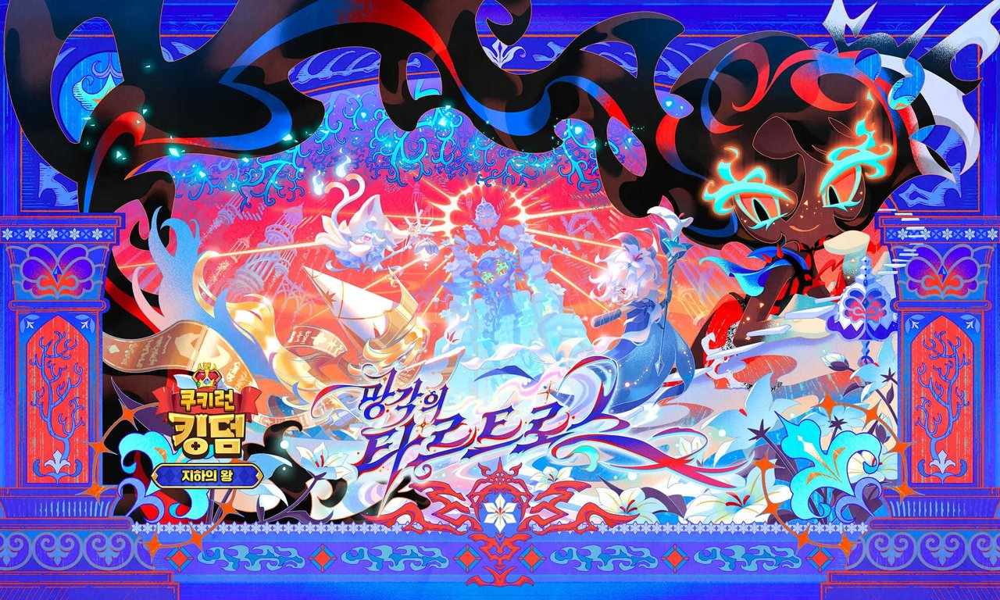

쿠키런킹덤 망각의타르트로스 업데이트 지하명왕쿠키 레전더리타르트 정체 총정리
쿠키런: 킹덤 하다 보면 로드맵 예고 하나로 며칠씩 설레발 치는 순간이 있잖아요. 7월 14일에 쿠키런 월드 공식 계정이 하반기 로드맵을 풀었을 때, 저도 '레전더리 타르트'라는 문구를 보고 대뜸 '드디어 타르트맛 쿠키가 나오는구나' 싶었거든요. 그런데 지난 7월 29일, 점검이 끝나고 실제로 '망각의 타르트로스' 업데이트가 열리고 나서야 제 착각이었다는 걸 알았어요. 신규 콘텐츠가 쿠키가 아니라 전혀 다른 자리에서 튀어나왔더라고요. 저처럼 로드맵 문구만 보고 넘겨짚으신 분들이 은근히 많으실 것 같아서, 이번 업데이트에 뭐가 새로 들어왔는지 오해했던 부분부터 차근차근 정리해볼게요.
레전더리 타르트, 알고 보니 쿠키가 아니라 토핑이었어요
결론부터 말하면 '레전더리 타르트'는 신규 쿠키가 아니라 '레전더리 토핑 타르트'예요. 쿠키 도감에 새 얼굴이 추가되는 게 아니라, 장비처럼 끼우는 토핑 한 종류가 늘어난 거였습니다. 저처럼 로드맵 문구만 보고 '타르트맛 쿠키'로 오해하신 분들이 검색을 많이 하시는 것 같길래, 여기서 확실히 짚고 넘어갈게요.
- 레전더리 토핑 '타르트'는 11종 옵션 중 1종이 무작위로 적용돼요.
- 얻는 방법은 두 가지예요. '명계의 시련'에서 보상으로 얻거나, 기존에 갖고 있던 에픽 토핑 타르트를 승급시켜서 만들 수 있어요.
- 옵션이 랜덤으로 걸리는 구조라, 원하는 조합이 한 번에 안 나올 수도 있어요.
- 강화는 '타르트 코어'라는 재료를 소모하는 방식인데, 코어를 어디서 모으는지는 아직 공식 안내가 없어서 확인되는 대로 다시 정리해 드릴게요.
이름만 보고 '타르트맛 쿠키'를 기다리셨던 분들껜 좀 아쉬운 소식일 수도 있는데요, 대신 토핑은 여러 쿠키에 돌려 끼울 수 있는 물건이라 오히려 활용도는 더 넓다고 봐요. 도감이 아니라 토핑 목록 쪽에서 확인하셔야 헷갈리지 않으실 거예요.
쿠키가 아니라 토핑이라는 걸 알고 나니, 특정 쿠키 하나한테 몰아주기보다 여러 쿠키한테 두루두루 굴려볼 수 있는 아이템이더라고요. 뽑기로 바로 나오는 게 아니라 '명계의 시련' 보상이나 에픽 토핑 승급으로 얻는 구조인데요, 미리 명계의 시련을 좀 돌려두시거나 에픽 타르트를 챙겨두시는 것도 방법이겠네요.
토핑 강화 메뉴에서 레전더리 토핑 '타르트' 옵션이 뜬 화면이에요.
망각의 타르트로스 업데이트, 어떻게 바뀌었나
망각의 타르트로스는 7월 29일 오전 점검(공식 공지 기준 06:00~10:00으로 안내됐어요)을 거쳐 적용된 8월 정기업데이트로, '운명의 시간선' 월드 탐험 에피소드의 네 번째 테마예요. 이름은 '8월 정기업데이트'인데 실제 적용일은 7월 29일이라 날짜만 보면 좀 헷갈리실 수 있는데, 로드맵에서 예고했던 8월 정기업데이트 회차가 이번 패치로 적용된 거라고 보시면 돼요.
- 이번에 먼저 열린 에피소드는 EP7 '지하의 왕'이에요.
- 새로 추가된 랜드 룰은 '기억의 잠식'인데, 게이지가 다 차면 아군이 수면 상태에 빠지면서 각종 디버프가 붙어요.
- 테마 이름부터 '망각'이 들어가는 만큼, 분위기도 이전 테마보다 좀 더 무거운 느낌이에요.
이번 에피소드에서는 퓨어바닐라 쿠키 일행이 마법학당 곳곳에 흩어진 기억의 매개체 '우유 방울'을 따라 세인트릴리 쿠키의 과거를 들여다보다가, 마법학당 초대 교장의 정체까지 밝혀내는 흐름이 펼쳐진다고 해요. 테마 이름이 왜 하필 '망각'인지 스토리를 따라가다 보면 자연스럽게 납득이 되거든요.

신규 테마 '망각의 타르트로스'와 EP7 '지하의 왕' 로고가 함께 담긴 공식 키비주얼이에요.
이미지 출처: 데브시스터즈 공식 뉴스룸 · 네이버 본문엔 받아서 재업로드 권장
랜드 룰이 수면 디버프 쪽이라, 힐러나 디버프 해제기 하나쯤은 미리 챙겨두고 들어가시는 게 마음이 편하거든요. 처음 들어가시는 분이라면 파티에 디버프 해제 스킬 하나 정도는 꼭 끼워두시길 추천드려요.
신규 레전더리 지하명왕 쿠키, 스킬이 꽤 화끈해요
지하명왕 쿠키는 회복형 레전더리 쿠키로, 스킬 '타르트로스의 강'으로 아군을 지키고 적에게는 디버프를 걸어요.
- 아군한테는 제거 가능한 디버프를 해제해준 뒤 체력을 회복시키고, 체력 보호막에 피해 감쇄·피해 감소까지 얹어줘요.
- 적한테는 영혼 속박, 낙인된 영혼, 부상 디버프를 부여해요.
참고로 지하명왕 쿠키는 궁극기 말고 전술 스킬 '명계의 종소리'도 갖고 있는데, 아군에게 걸린 기억의 잠식 게이지·잠식 상태를 한 번에 해제해주고 적에게는 피해를 입혀 수면 상태에 빠뜨리는 스킬이에요. 이번 랜드 룰이 하필 기억의 잠식이라, 이 스킬 하나로 룰 대응까지 되는 셈이라 편성 순서를 꼭 챙겨보시면 좋을 것 같아요.
회복 한 번에 보호막·감쇄·감소가 줄줄이 따라붙는 구조라, 서브딜러보다는 탱커·아군 보호 라인에 세워두면 진가가 나올 것 같아요. 디버프까지 같이 거는 걸 보면 힐러 자리보다는 방어 라인 쪽에 더 어울리는 스킬 구성이더라고요.
지하명왕 쿠키 궁극기 '타르트로스의 강'이 발동되는 장면이에요.
에픽 쿠키 아스포델맛 쿠키는 폭발형이에요
아스포델맛 쿠키는 폭발형 에픽 쿠키로, '고양이 유령' 스킬을 씁니다. 적이 있는 자리에 고양이 유령을 소환해두고, 일정 시간이 지나면 그 자리에서 유령을 터뜨려 피해를 주는 방식이에요. 즉발 딜보다는 한 박자 늦게 터지는 지연형 폭딜에 가까운 느낌인데요.
에픽 등급치고는 딜 구조가 꽤 특이한 편이라, 유령이 터지는 타이밍에 맞춰 다른 스킬을 겹치면 순간 화력이 확 몰리는 재미가 있잖아요. 존재감이 뚜렷한 편이라 이번 업데이트로 새로 파티에 합류시켜볼 만한 쿠키 중 하나로 눈여겨보고 있어요.
아스포델맛 쿠키의 '고양이 유령'이 소환된 순간이에요.
새로 생긴 스타 어빌리티랑 명계의 시련은 뭔가요
스타 어빌리티는 아레나 전용으로만 열리는 신규 시스템이고, 명계의 시련은 끝없이 이어지는 무한 진행형 콘텐츠예요.
- 스타 어빌리티는 고등급 쿠키의 획득·성급 달성 단계에 맞춰 아레나에서 활성화되고, 스타 파워·스타 가드·스타 힐 세 가지로 구성돼요.
- 명계의 시련은 시즌마다 지정되는 속성에 맞춰 쿠키를 편성한 뒤 전투·회복·랜덤 이벤트 노드 중 원하는 걸 골라 전진하는 방식이에요. 시즌이 바뀌면 지정 속성도 같이 바뀌는 구조라, 들어가기 전에 이번 시즌 속성부터 확인하고 편성을 손보시는 게 좋아요.
- 둘 다 기존 콘텐츠와는 별개로 새로 열린 자리라, 진행 여부는 어디까지나 선택이에요.
둘 다 당장 안 해도 되는 콘텐츠긴 하지만, 아레나 순위 신경 쓰시는 분들이라면 스타 어빌리티부터 하나씩 찍먹해보시는 걸 추천드려요. 명계의 시련은 매일 조금씩 파고들 수 있는 구조라, 급하게 몰아서 하기보다는 틈틈이 진행하시는 게 부담이 덜하실 거예요.
아레나 편성 화면에 스타 어빌리티 아이콘이 뜬 모습이에요.
그 외에 같이 풀린 것들
신규 쿠키·시스템 말고도 자잘하게 챙길 게 몇 개 더 있어요.
| 구분 | 이름 |
|---|---|
| 레전더리 스킨 | 쉐도우밀크 쿠키 '마법학당의 첫 스승' |
| 특별 토핑 | '생명이 부서지는' |
| 스페셜 등급 아이싱 | '영면으로 인도하는 불꽃 세트' |
참, 7월 로드맵 예고에 같이 언급됐던 '스페셜 선별 뽑기'는 이번 업데이트 소식에는 확률이나 재화 구성 같은 구체적인 내용까지는 안 나왔어요🔍 추가 공지 확인. 로드맵에 예고됐던 항목인 만큼 조만간 따로 자세한 공지가 나올 것 같으니, 확인되면 다시 정리해 드릴게요. 스킨·특별 토핑·스페셜 아이싱은 이름만 봐도 이번 테마 분위기랑 딱 맞아떨어져서, 수집 욕심 있으신 분들은 놓치지 않고 챙기시면 좋을 것 같아요.
이번 테마 분위기랑 색감이 잘 맞아떨어져서 컬렉션 욕심 있으신 분들은 눈여겨보실 만해요.
쉐도우밀크 쿠키에 적용된 레전더리 스킨 '마법학당의 첫 스승'이에요.
자주 묻는 질문
Q. 지하명왕 쿠키는 기억의 잠식 룰에서도 안전한가요?
네, 랜드 룰 '기억의 잠식'으로 아군이 수면 상태에 빠지는 상황에서도 지하명왕 쿠키는 이 디버프에 면역이라고 해요. 이 룰이 걸린 던전에서는 지하명왕 쿠키를 먼저 편성해보는 것도 방법이겠네요.
Q. 이번에 새로 열린 에피소드는 어디까지인가요?
'운명의 시간선' 네 번째 테마는 두 개의 에피소드로 구성되는데, 이번엔 그중 EP7 '지하의 왕'만 먼저 공개됐어요. 나머지 에피소드는 순차 공개를 기다리는 상태라 이번 업데이트로 다 볼 순 없어요.
쿠키런: 킹덤 망각의 타르트로스 정리
챙길 포인트만 추리면, 레전더리 타르트는 쿠키가 아니라 토핑이라는 것부터 헷갈리지 않으시면 좋겠고요, 지하명왕 쿠키·아스포델맛 쿠키 둘 다 스타일이 뚜렷해서 파티 편성 고민하는 재미가 쏠쏠하네요. 스타 어빌리티나 명계의 시련처럼 새로 열린 콘텐츠도 하나씩 찍먹해보시면 좋겠고, 스페셜 선별 뽑기 같은 남은 예고 항목도 공식 공지가 뜨는 대로 이어서 챙겨드릴게요.
새로 들어온 콘텐츠가 많다 보니 하나씩 짚다 보면 헷갈리실 수도 있는데, 인게임 공지에서 항목별로 한 번 더 확인해보시면 놓친 부분 없이 챙기기 편하실 거예요.
이번 업데이트 신규 콘텐츠가 정리된 인게임 공지 화면이에요.
✔ 쿠키런: 킹덤 같이 보기 좋은 내용
(같은 게임의 다른 글은 아직 없어요 — 쿠키런: 킹덤 첫 글이에요. 앞으로 다른 업데이트나 쿠키 정리 글이 나오면 여기에 이어서 링크로 연결해둘게요.)
참고한 곳
· 쿠키런: 킹덤 공식 사이트
· 쿠키런: 킹덤 공식 고객센터 공지사항
2026.08.08 기준